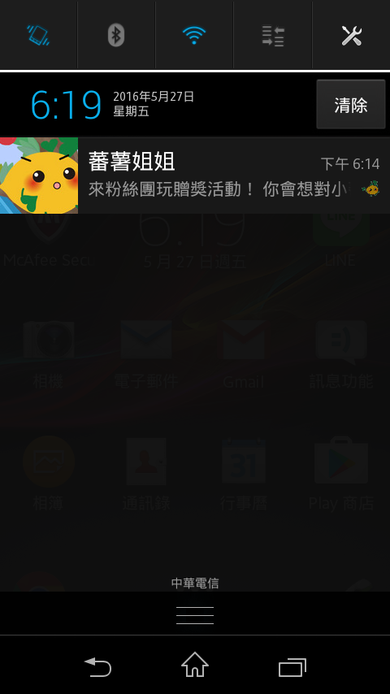

追蹤

還在刷重新整理看有沒有新紙條嗎? 還在狂按 F5 看有沒有新留言嗎? 快來試試這個 APP 吧(#
自動通知
只要是追蹤的人，發出新紙條或是有人回復，就會送出手機通知喔
因為權限的關係，所以只有公開紙條有這個功能(#

還在刷重新整理看有沒有新紙條嗎? 還在狂按 F5 看有沒有新留言嗎? 快來試試這個 APP 吧(#
只要是追蹤的人，發出新紙條或是有人回復，就會送出手機通知喔
因為權限的關係，所以只有公開紙條有這個功能(#